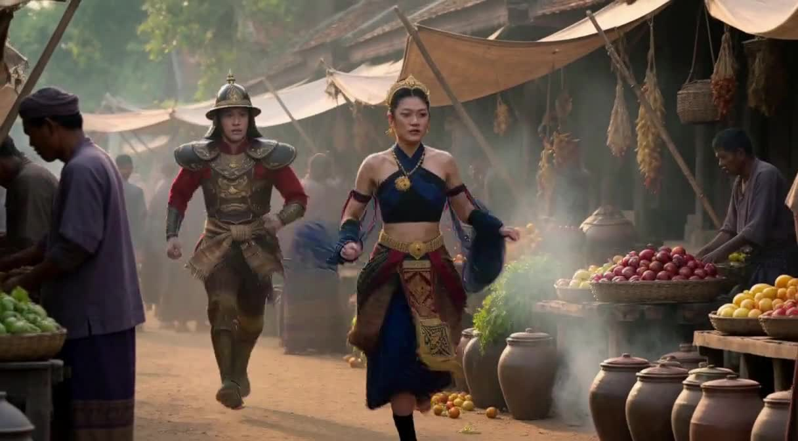
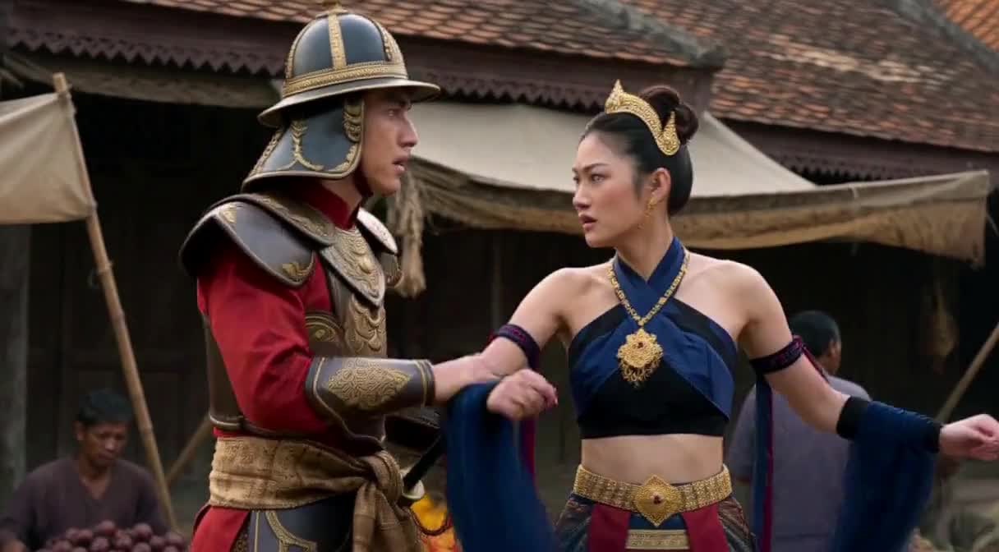
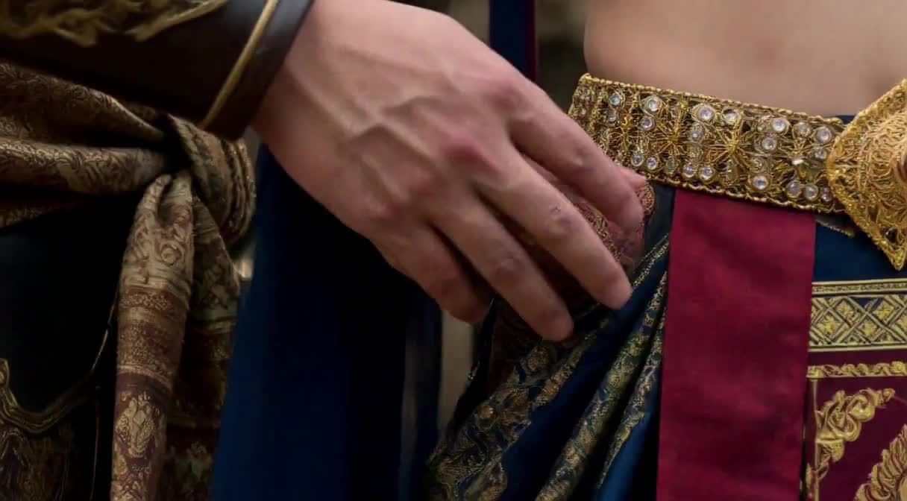
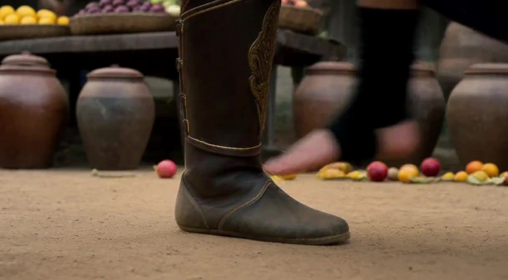
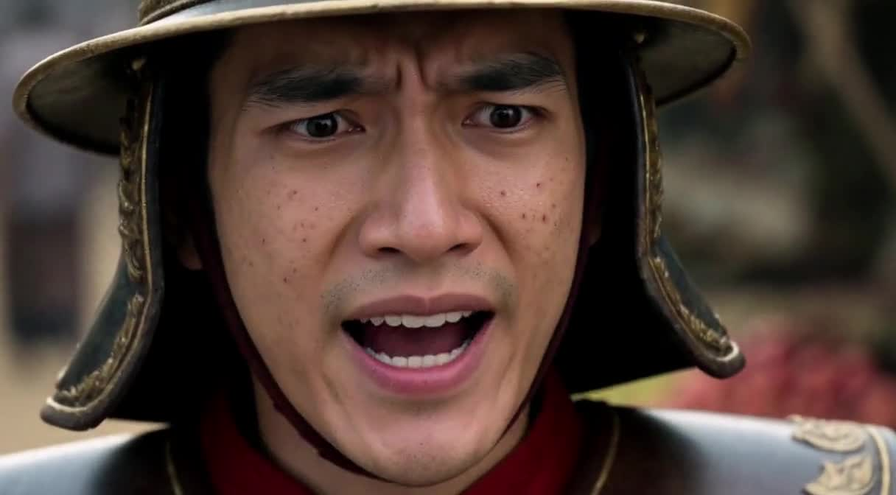
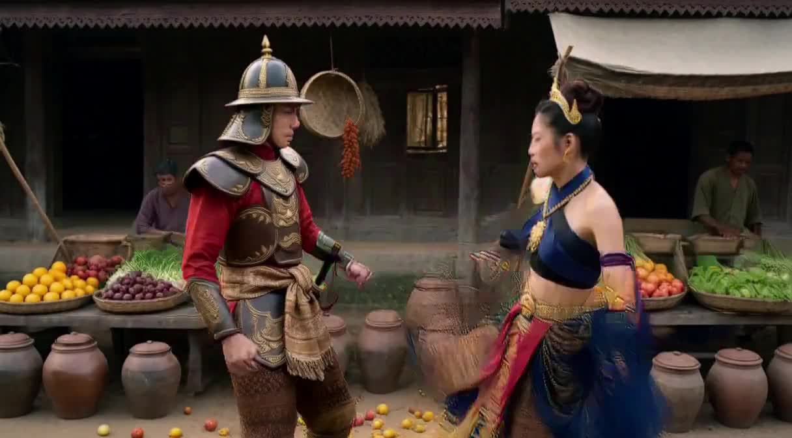
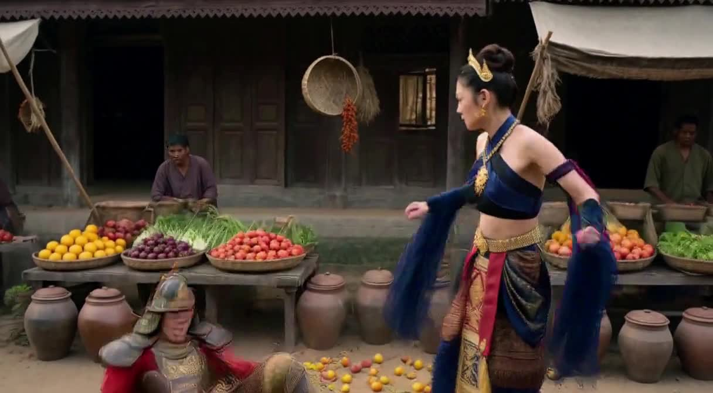
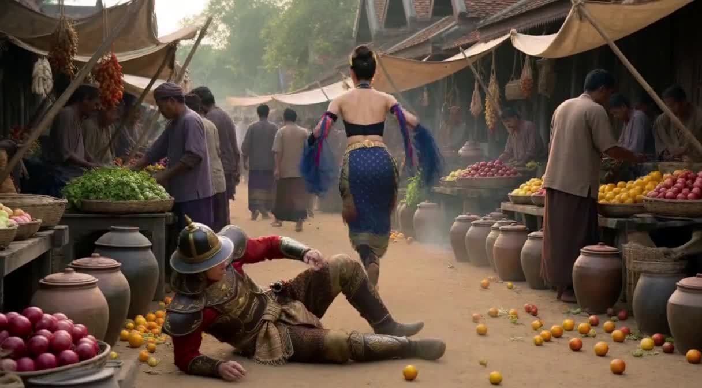

วิเคราะห์คลิป v10 (9 shot, 13.667s จริง จาก script 12.1s) เทียบกับ prompt ที่แก้ 3 syntax bug + ตัด shot กระโดดข้ามแผงผลไม้ออก นี่คือครั้งแรกในโปรเจกต์นี้ที่ไม่พบการสลับลำดับ shot หรือ causal-order inversion เลยตลอดทั้งคลิป








v6–v9 ทุกรุ่นมีปัญหา cause/effect หรือลำดับ shot สลับกันอย่างน้อย 1 จุด v10 คือรุ่นแรกที่ทั้ง 9 shot เรียงตรงลำดับสคริปต์ 100% — ยืนยันว่าการแก้ 3 syntax bug (ย้าย negative constraints เข้า detailed_description, แก้ retention_analysis เป็น comma-list, ย้าย style sentence มาก่อน [Shot 1]) และการตัด shot กระโดดข้ามแผงผลไม้ออก ได้ผลจริง ไม่ใช่แค่ทฤษฎี
เป็นจุดที่แม่นยำที่สุดในคลิปทั้งหมด — ทั้ง timing และ framing (macro insert, มือ+สไบเต็มเฟรม, ไม่เห็นหน้า) ตรงตาม script ทุกตัวอักษร
micro-expression-physics.md §4 เคยบันทึกปัญหานี้ไว้เฉพาะจุดหยิบผ้าเช็ดหน้า (แก้ไปแล้วตั้งแต่ v7) แต่รอบนี้ปัญหาเดียวกันย้ายไปโผล่ที่ Shot 2 แทน (reach+block) — script เขียน chain ไว้ครบ (reach → eyes narrow → spin low → forearm block) แต่เรนเดอร์ออกมาเป็นแค่ยืนจับแขนกันนิ่ง ๆ ไม่มี spin ไม่มี block เกิดขึ้นจริง ต้องพิจารณาว่านี่คือ pattern ที่กว้างกว่าที่คิด — ไม่ใช่ "beat นี้เคยพัง" แต่คือ "reflex chain แบบนี้มีโอกาสพังได้ทุก beat ที่มันปรากฏ" แม้จะเคยแก้ตัวอื่นไปแล้ว
Drift ไล่จาก +1.8s (stomp) → +2.1s (โอ้ย) → +2.0-3.5s (kick) → +2.4s (fall) → +1.7s (escape ก่อนคลิปจบ) — เข้าเกณฑ์ที่ action-sequence-craft.md §3 บันทึกไว้แล้ว (เนื้อหาช้ากว่ากำหนดแบบสะสม แต่ไม่สลับลำดับ) ไม่ใช่ finding ใหม่ แต่ยังไม่ถูกแก้
v4-v7 = 16.5s, v9 = 14.375s, v10 = 13.667s — สามค่านี้ไม่มีความสัมพันธ์ที่ทำนายได้เลยจากจำนวน shot หรือความยาว script ยืนยันสิ่งที่บันทึกไปแล้วใน §4 ว่า duration setting "15s" ไม่ได้ผลิตค่าคงที่ ห้ามออกแบบ pacing โดยยึดค่าใดค่าหนึ่งเป็นสมมติฐาน
| Shot | Beat | Scripted start | Observed start | Drift |
|---|---|---|---|---|
| 1 | wide chase | 0.00s | 0.00s | ±0.0s |
| 2 | reach + block | 2.10s | ~2.2s | +0.1s |
| 3 | secret lift | 3.30s | 3.30s | ±0.0s |
| 4 | reaction/line/slap | 3.90s | ~3.9s (slap ~6.7s) | +0.0–0.9s |
| 5 | foot stomp | 6.30s | ~8.1s | +1.8s |
| 6 | face-shock "โอ้ย!" | 6.90s | ~9.0s | +2.1s |
| 7 | kick | 8.10s | ~9.6–11.6s | +1.5–3.5s |
| 8 | the fall | 9.60s | ~12.0s | +2.4s |
| 9 | escape | 10.80s | ~12.5s | +1.7s |